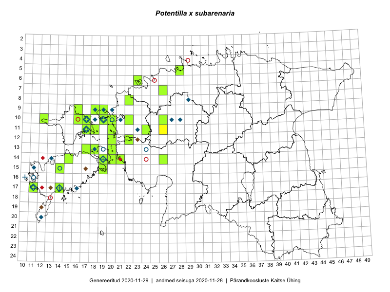

Potentilla x subarenaria
Uuendatud: 2016-12-02
Kaardile koondatud taksonid: Potentilla subarenaria Borb. ex Zimmeter; Potentilla x subarenaria Borbás ex Zimmeter

Kaart põhineb 15 kirjel, neist vaatlusi 10 ja eksemplare 5. Taksonit on leitud 11 ruudust.
Viited andmebaasikirjetele
- Toomas Kukk, Eerik Leibak: 2015-08-09: 14-15: ala
- Peedu Saar, Toomas Kukk: 2015-05-26: 10-17: ala
- Toomas Kukk, Peedu Saar: 2014-07-03: 14-21: ala
- Thea Kull, Meeli Mesipuu, Eerik Leibak: 2014-06-11: 11-26: ala
- Toomas Kukk, Peedu Saar: 2016-05-06: 11-18: GPS punkt
- Toomas Kukk, Peedu Saar: 2016-05-12: 10-19: ala
- Toomas Kukk, Peedu Saar: 2016-05-13: 09-19: GPS punkt
- Toomas Kukk, Peedu Saar: 2016-05-13: 09-19: GPS punkt
- Toomas Kukk, Meeli Mesipuu, Johannes Kõdar: 2016-08-11: 17-14: ala
- Toomas Kukk, Meeli Mesipuu, Johannes Kõdar: 2016-08-11: 17-14: GPS punkt
- Peedu Saar, Toomas Kukk: 2015-05-27: 09-16: GPS punkt
- Peedu Saar, Maret Gerz: 2016-08-12: 15-14: GPS punkt
- Peedu Saar, Toomas Kukk: 2016-05-12: 10-19: GPS punkt
- Peedu Saar, Toomas Kukk: 2016-05-08: 10-16: GPS punkt
- Peedu Saar, Toomas Kukk: 2016-05-13: 09-19: GPS punkt